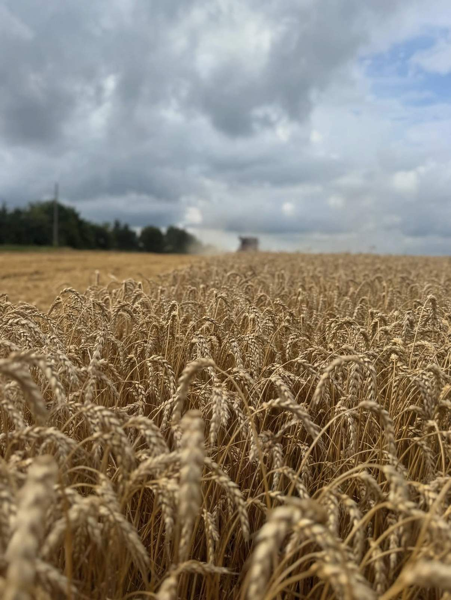
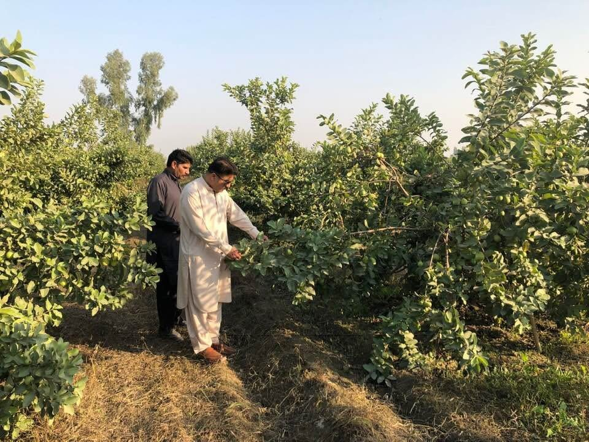
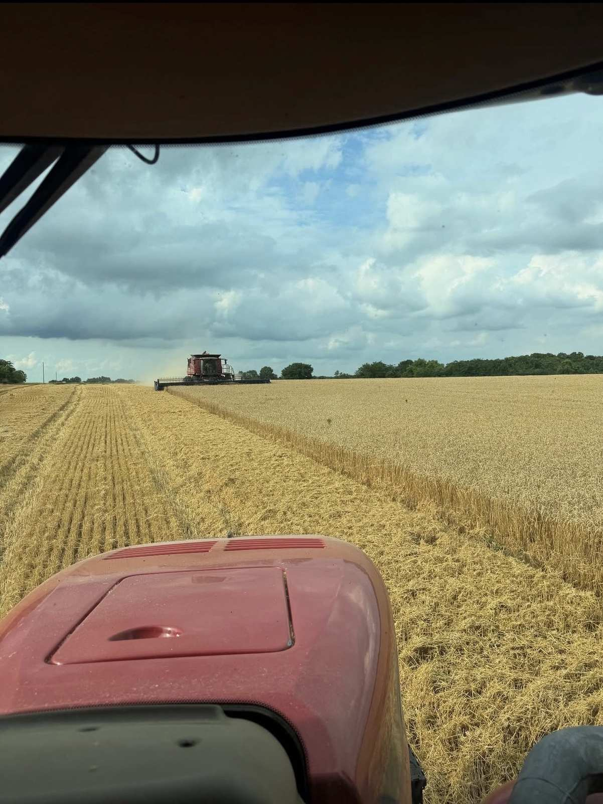

Agri & Dairy
Bringing innovation to Pakistan's agricultural sector with sustainable farming practices, modern dairy operations, and high-yield crop management.
Sindhu Agriculture Farms
Sindhu Agriculture & Livestock Farms is a large-scale agricultural estate strategically located near the Sahianwala Interchange on the Faisalabad–Islamabad Motorway along the CPEC corridor, in close proximity to the Faisalabad Industrial Estate Development & Management Company (FIEDMC) and Allama Iqbal Industrial City SEZ. The operation focuses on sustainable farming practices, efficient irrigation systems, and commercial-scale crop production to maximize productivity while preserving long-term soil health. The estate cultivates wheat, sugarcane, and guava orchards, while producing a range of agricultural products that reflect the Group’s commitment to innovation, food security, and responsible land stewardship.


Located near Sahianwala Interchange on the Faisalabad–Islamabad Motorway along the CPEC corridor, close to FIEDMC and Allama Iqbal Industrial City SEZ.
Focused on sustainable farming practices, efficient irrigation systems, and long-term soil health while improving productivity at commercial scale.
Cultivating wheat, sugarcane, and guava orchards, along with a range of agricultural products aligned with food security and responsible land stewardship.